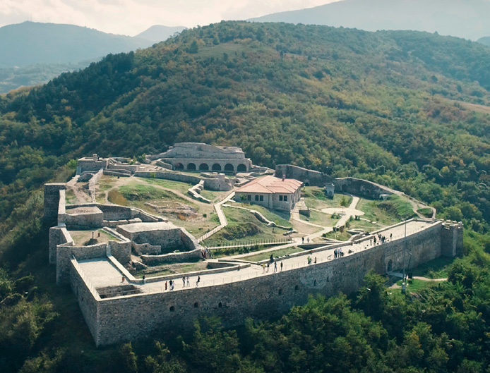
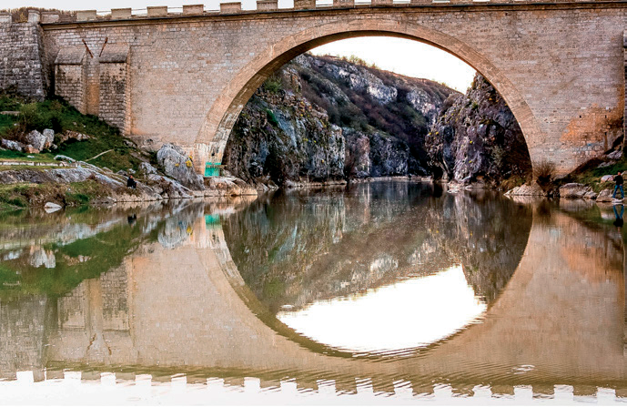
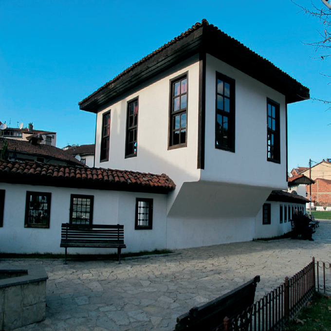
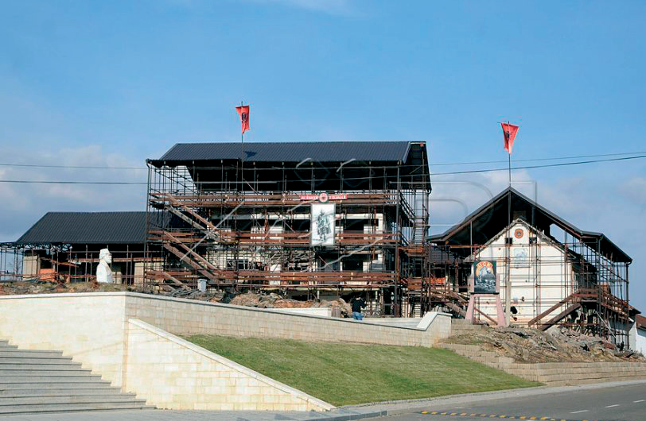

Si kanë jetuar të parët tanë?
Monumentet historike

Kjo kala i ka fillet e saj në periudhën e parë të qytetërimit të këtij rajoni, në parahistori. Është e vendosur në pjesën lindore të qytetit, mbi një kodër në formë konike, e rrethuar me mure mbrojtëse. Kalaja e Prizrenit përmban pjesë të rëndësishme të historisë së lashtë të qytetit. Është vend interesant për vizitorët e vendit dhe të huaj.

“Ura e Fshajtë” ose “Ura e Shenjtë” është një urë guri e shekullit XVIII, me një hark mbi kanionin e lumit Drini i Bardhë.

Më 10 qershor të vitit 1878, në Prizren u mblodhën shqiptarë nga të gjitha viset shqiptare. Ata formuan “Lidhjen Shqiptare të Prizrenit”, e cila kishte për qëllim dëbimin e pushtuesve dhe krijimin e shtetit të pavarur shqiptar.

Kompleksi Memorial “Adem Jashari” ndodhet në Prekaz, ku gjenden shtëpitë, tashmë të shndërruara në muze, si dhe të gjitha varret e të rënëve në luftë të familjes Jashari.